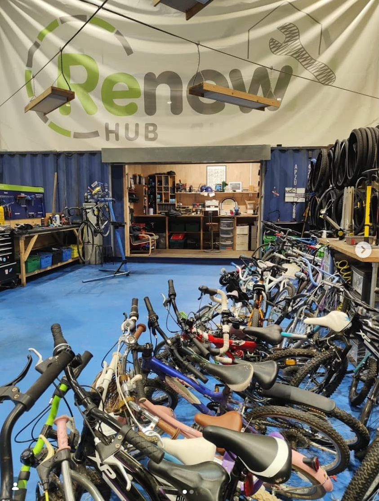
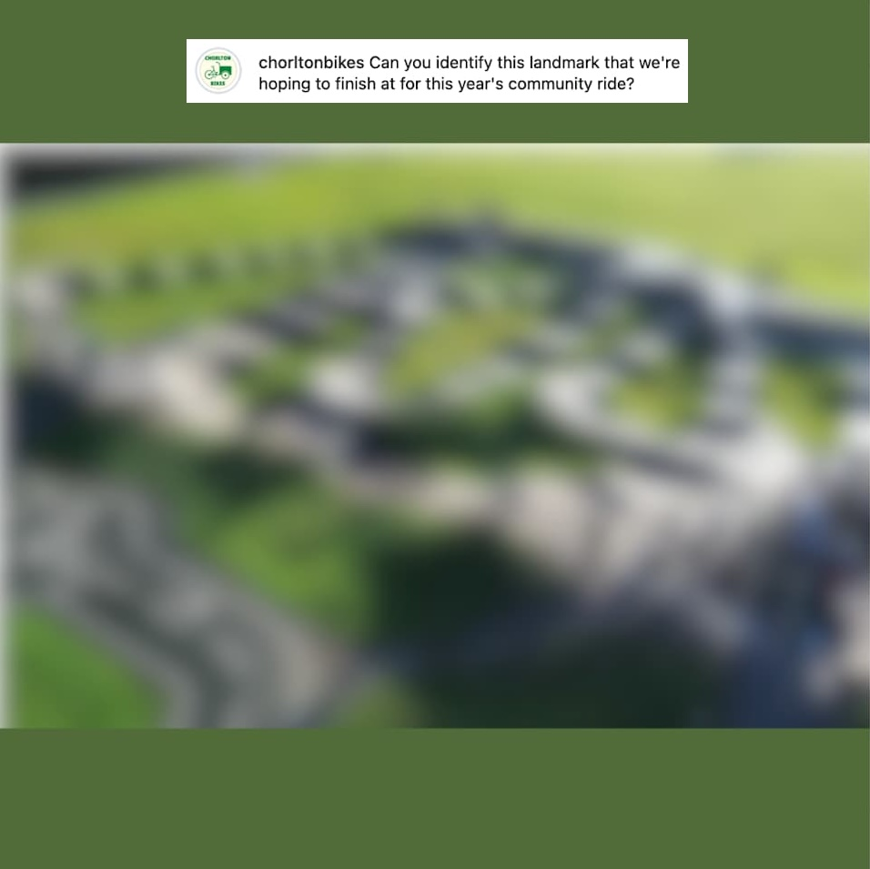
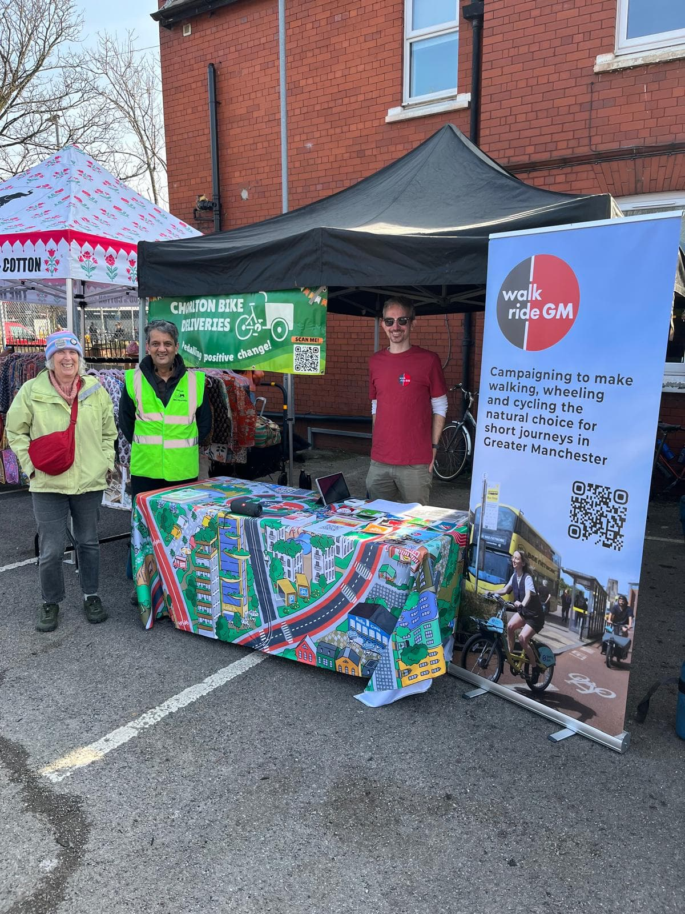
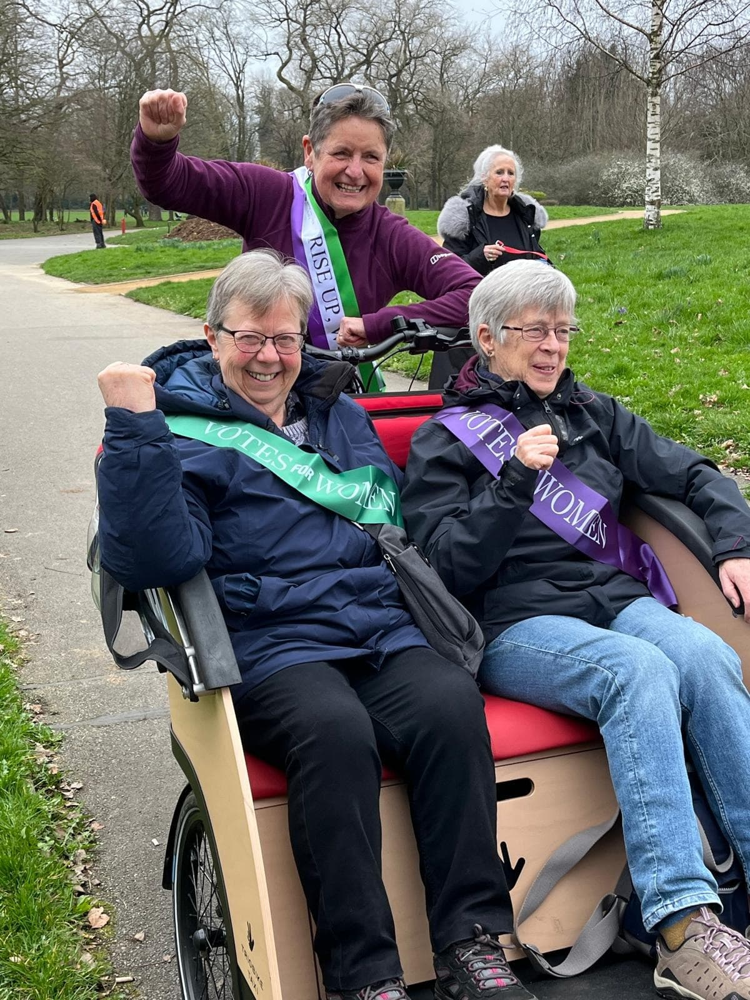
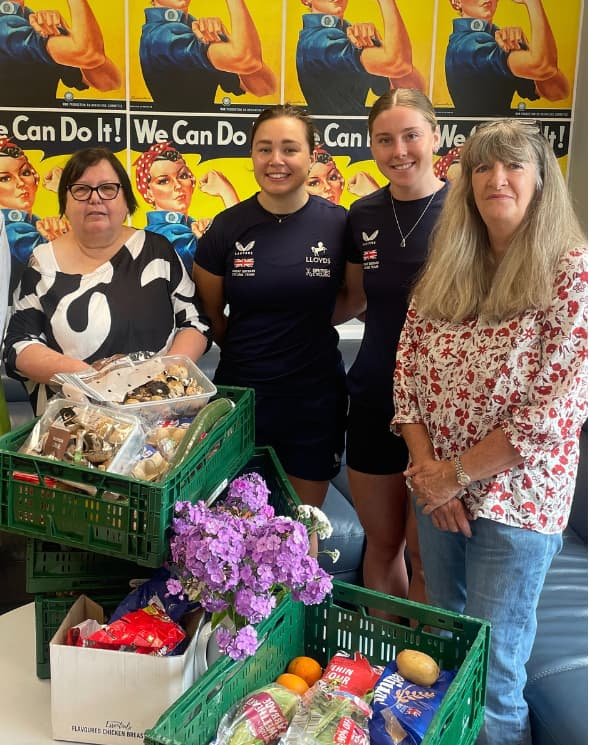
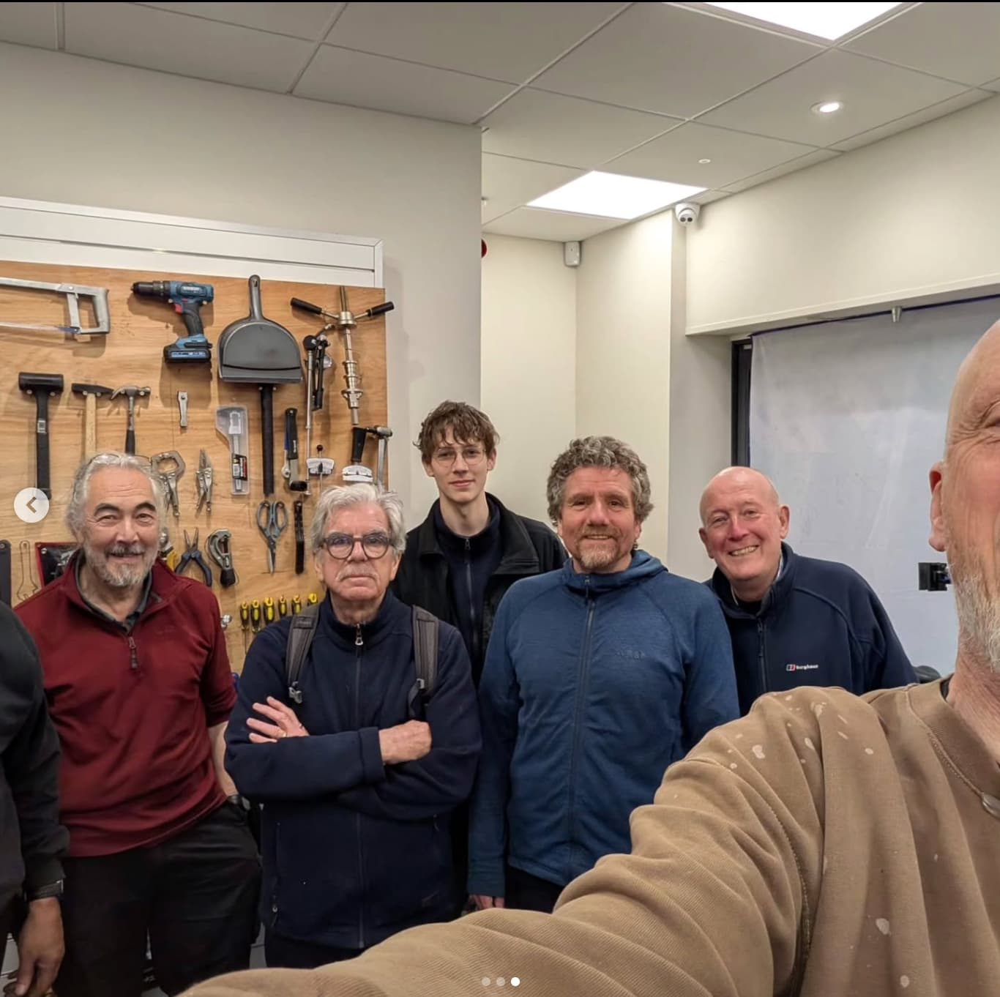
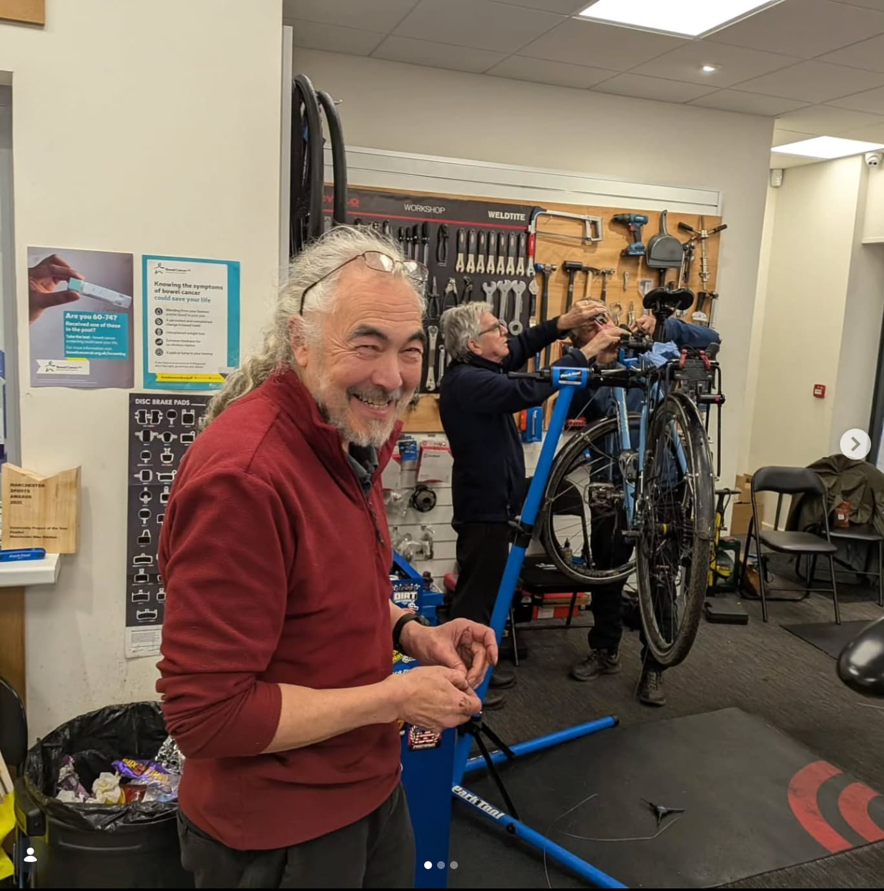
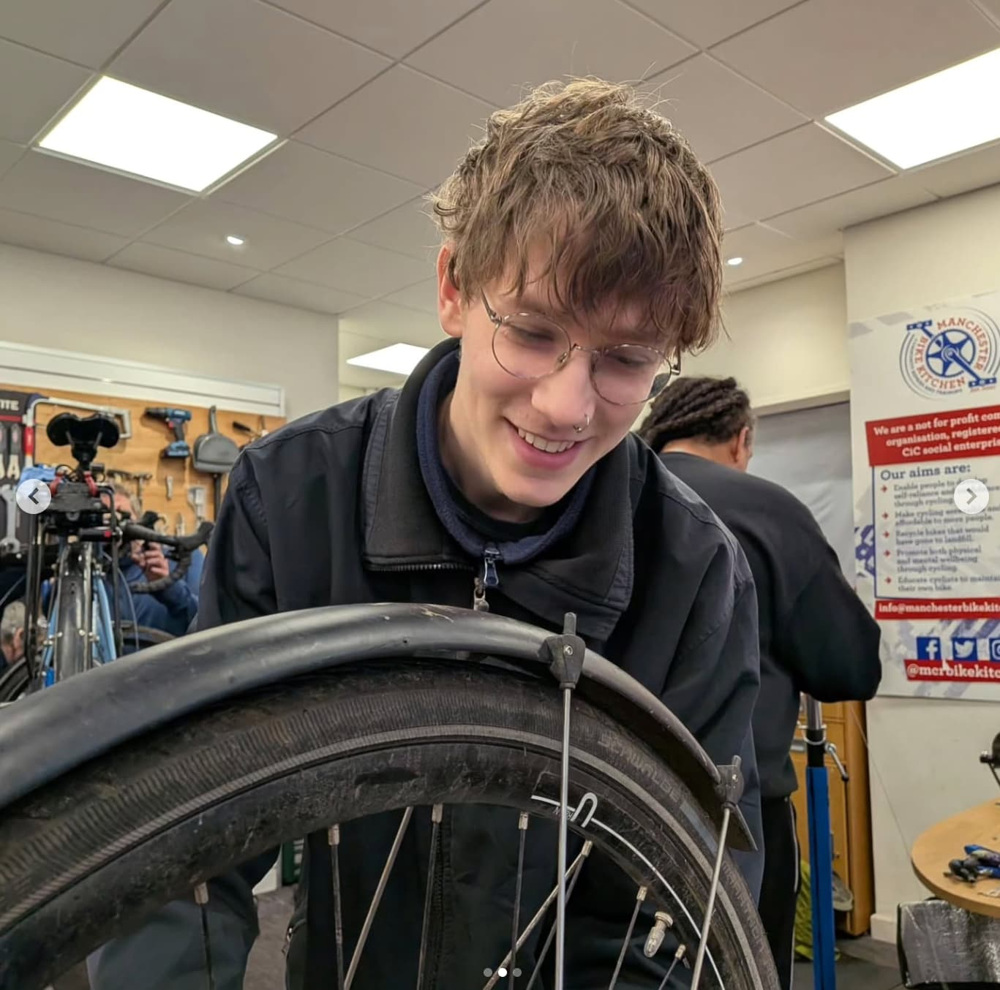
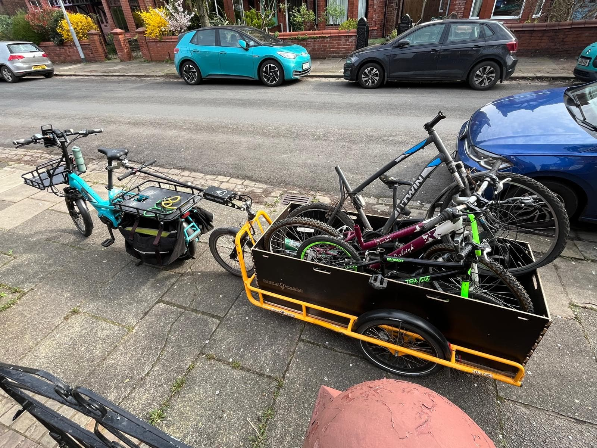

Hello Friends and Members of Chorlton Bikes,
We're really glad you're here. This newsletter is a chance to share what we've been up to - our riders, our partners, and the difference we're making together in Chorlton and beyond.
This month's edition is arriving a little later than usual - but with the sunshine finally making an appearance, it feels like a good moment to reflect on a positive and productive March.
March
2026
As the weather improved and the days became brighter, our riders and volunteers enjoyed being back out on the roads, with plenty happening across the Chorlton Bikes community.

R4GM Lunch @ Trafford Park Renew Hub
- ♻️ We were invited to Trafford Park's Renew Hub for a tour and lunch to celebrate our grant award supporting our work with Bikes4Refugees.
- ♻️ The Renew Hub is a vast recycling facility not usually open to the public, although they are beginning to host occasional pop-up shops.

Community Ride 2026 Progress
- 🚴 We have started promoting this year's community ride with teaser images of landmarks along the planned route.
- 🚴 The current proposed route: start at Chorlton Park, head up Barlow Moor Road towards Sale Water Park, cross the new Bailey Bridge (pending confirmation), and finish at Wythenshawe Park pump track.
- 🚴 This year's ride will again promote cycling for all, with a focus on new access routes and showcasing Wythenshawe Park's facilities.
- 🚴 It's still a provisional route and date until we get the official go ahead from Parks Authority but we have pencilled in Sunday 6th September - so please save the date.

Chorlton Makers Market
- 🛍️ We held a stall at Chorlton Makers Market on 21st March alongside our friends at Walk Ride GM.
- 🛍️ We promoted this year's community ride, and encouraged people to join our membership and/or become a Friend of Chorlton Bikes through a one off or regular donation.
- 🛍️ Some really interesting active travel conversations with people in the sun.


International Women's Day
- 💜 We marked International Women's Day by celebrating the brilliant women we work with across our community.
- 💜 From our Trishaw Pilot legend Glynis, to Karen and the team at Emmeline's Pantry, alongside Team GB cyclists Sophie Capewell and Emma Finucane.



Mechanics Course
- 🔧 Six of our members (Chris, Peter, Travis, Mark, Gary and Dave) attended a mechanics course run by Manchester Bike Kitchen, funded by R4GM.
- 🔧 By learning these new skills, we aim to support Dave in our collaboration with Bikes4Refugees - we collect donated pre-loved bikes from local residents, refurbish them and then they are allocated from the amazing Lucy at Bikes4Refugees to people who really need the freedom of movement that bikes give.

Bikes4Refugees
- ♻️ We continued collecting donated bikes from local residents this month.
- ♻️ Numbers were slightly lower while our trailer was out of action, but we're now back up and running and ready to collect again.
Welcome New Riders
- 👋 We welcomed new riders Sophie, Bill, Joe and Thomas to the team this month.
👋 Great to have you all on board and out riding with us.
Thank You
Thank you to everyone for the energy, care and commitment that keeps Chorlton Bikes moving forward. March has been another positive month - and there's plenty more to come. 🚴♀️💚